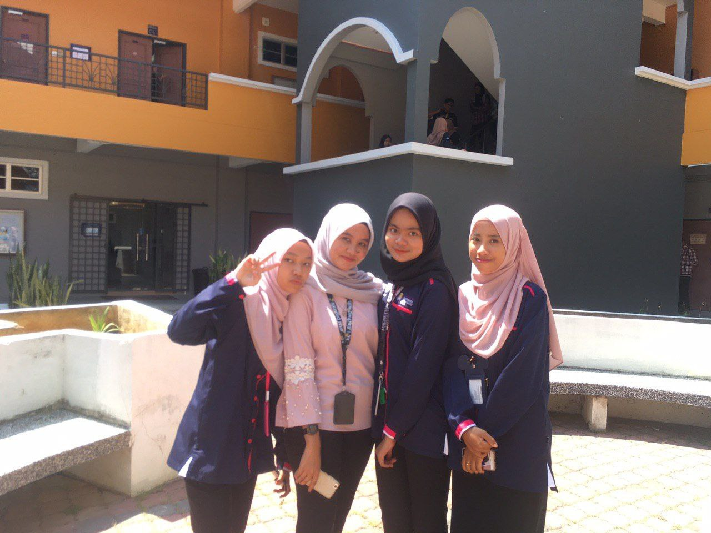
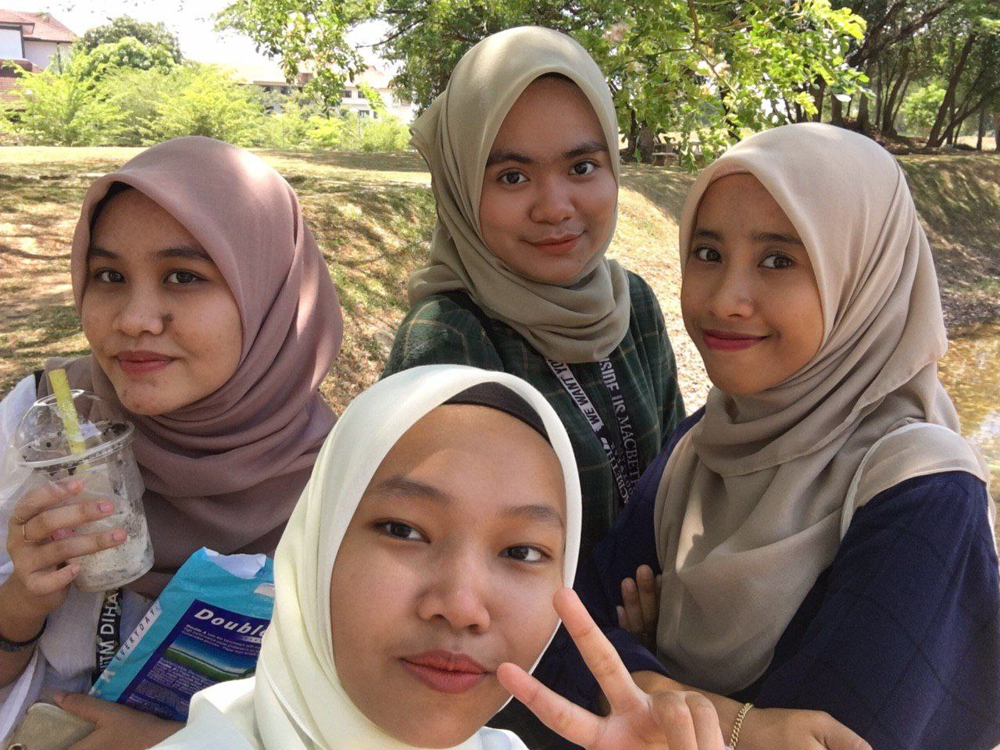

The meaning of friendship is a combination of affection, loyalty, love, respect, and trust. The first one is combination of affaction. Meaning of this is in friendship we always sharing love, sharing problems, sharing happiness and we sharing about everything because friends is second person we wil find after our family if we have any problem or want to share about anything. The second is about loyalty. This loyalty appeared when we start sharing our problem and happiness and also when actually trust each other in our friendship. We always want to find just our friends because we are trust in them. Then, about love? Of course when we have all that in the unconscious we love each other. That love is very strong for me because that will make we do anything for our friends. After that, respect is very the important things in friendship. Even though we know her or him so well, we also need to respect them because sometimes they also need some privacy from us. Lastly, we have to trust each other in our friendship, this will make we more love each other and we can share everythings and hope they not to tell anyone. So, for me friendship is very important things to me. I will love them as much i love my family.
1.BUNGA-BUNGA CANTIK (BBC)
This is my group bestfriends. This group we call BungaBungaCantik and actually we know each other from secondary school then we all got the same university which is UiTM Cawangan Kedah. From there, we always contact each other and help each other at the hostel. We always share our problems and our happiness. We are very close like siblings and i can't describe how much i love them.
This is my "together" friends. I call it together is because we always do the things together even though want to apply for university. They like my sibling and our parents also know each other. I also can't describe how much i love them.


This is my close friends at the UiTM. MUNMASBYFAT is our combination name which is Munirah, Mashitoh, Byya and Fatin. We start being a close friend since day one at our first class. On that day, me and Fatin came late to class because that day was the first day we studied and we did not know the location of the class. Upon reaching the class, our lecturer has given an assignment where we need to do the task in groups and we are in the same gropu. Since that day we became very close and never split up while doing assignments. All learning problems and life problems are often shared together. I already consider them like my own family.


2.TOGETHER


3.MUNMASBYFAT
4.MY BEST FRIEND FOREVER
Lastly, this is my Best Friend Forever. Her name is Nur Syasya Syazwani binti Muhammad Shuhaimi and i know her from primary school. I'm started close with her since secondary school since we are at the same classes. We always going to school together with bus until form 3, then form 4 we was going to school by motorcycle together. After that, we got the same university and i also roomate with her at kolej. From there i know that we always be there for each other. She share all the problem and the new things she know with me. I know everything about her and he know everything about me even though we always fight but still i love her so much.